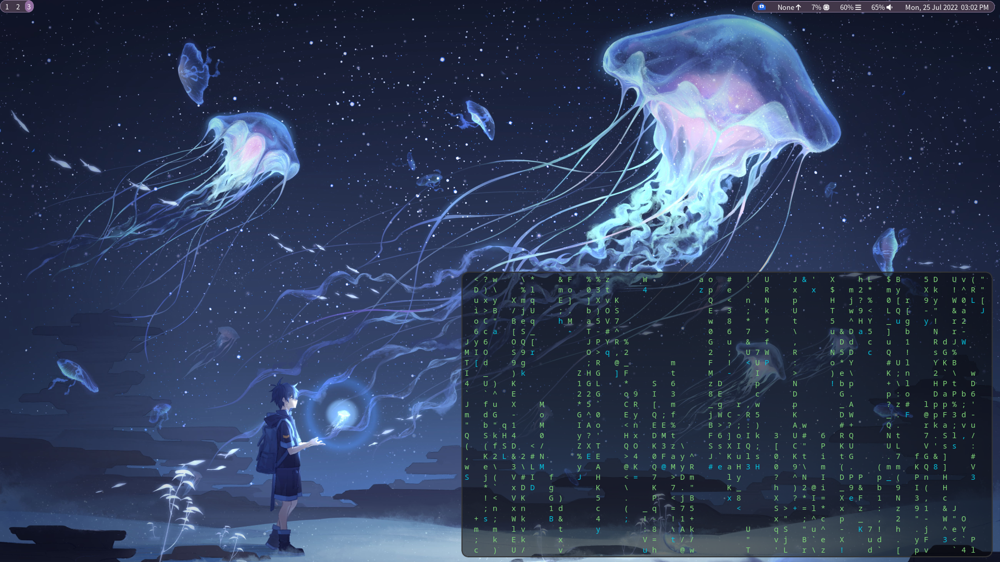

About
Hyprland is a tiling window manager that animates everything, is built on wlroots and features an easy to maintain codebase.
Hyprland is a tiling window manager that animates everything, is built on wlroots and features an easy to maintain codebase.